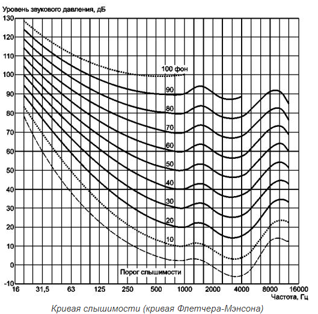
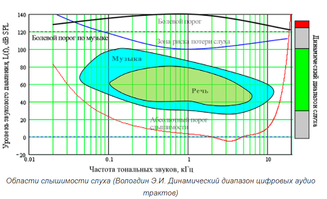

На основании международного соглашения в качестве стандарта принята кривая зависимости порога слышимости от частоты для чистого синусоидального звука(стандартный порог, а также границы порога слышимости для 10% и 90% испытуемых):
 Динамический диапазон слуха человека составляет около 130 дБ – от порога слышимости до т.н. «болевого порога»:
| Субъективная оценка шума; | Уровень шума | Источники или место измерения шума | ||
|---|---|---|---|---|
| Singular | 1st Person | I | me | |
| 2nd Person | you | you | ||
| 3rd Person | ♂ | he | him | |
| ♀ | she | her | ||
| o | it | it | ||
| Plural | 1st Person | we | we | |
| 2nd Person | you | you | ||
| 3rd Person | they | they | ||